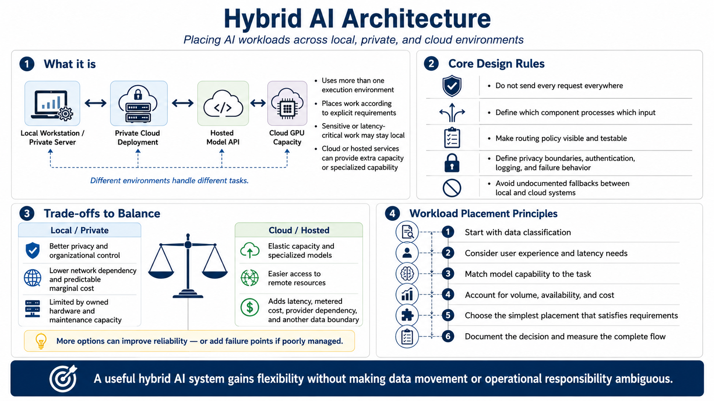

What Is a Hybrid AI Architecture?
Connecting to LMS... Progress: in progress

Narration
A hybrid AI architecture uses more than one execution environment and places work according to explicit requirements. Local workstations or private servers may handle sensitive or latency-critical tasks. Cloud GPUs can provide temporary accelerator capacity. Hosted model APIs can offer capabilities that are difficult to operate locally, while private cloud deployments extend organizational control into provider infrastructure.
Hybrid does not mean sending every request to every environment. It means defining which components process which inputs, where data is stored, and how the system behaves when a preferred resource is unavailable. A local model and a cloud endpoint connected by an undocumented fallback are not a sound architecture. The routing policy, privacy boundary, authentication, logging, and failure behavior must be visible and testable.
The design balances competing objectives. Local execution can improve privacy, control, and predictable marginal cost, but it is limited by owned hardware and maintenance capacity. Cloud services offer elasticity, specialized models, and remote access, but introduce network latency, metered spending, provider dependency, and another data boundary. Reliability may improve through alternatives, or decrease if additional dependencies are poorly managed.
Workload placement is an engineering decision, not an ideological commitment to local or cloud. Begin with data classification, user experience, model capability, volume, availability, and cost. Choose the simplest placement that satisfies them, document why, and measure the complete flow. A useful hybrid system gains flexibility without making data movement or operational responsibility ambiguous.